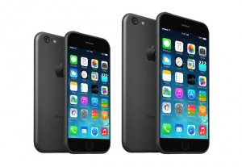
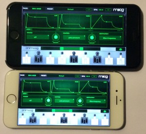
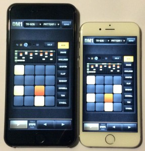

If you could bottle and sell the ‘anticipation’ of the world’s legions of Apple fan prior to each new iPhone release, you’d be one wealthy SOB. It never fails to amuse and amaze me, just how much build up there is. And I say to myself every year, I’m not going to buy into all the leaked pre-release videos and blurry images that appear online before the official product is unveiled, but I end up scouring all the apple news related sites for all the latest news and images nonetheless.
Well the big day arrived this September (as it does most years), and we now have not one, but two new flagship iPhones, the 6 and the 6 Plus. And it without a doubt, Apple has answered many of the questions fans have been hoping for leading up to the launch of Apples redesigned iPhones.
Both new models share most of the same key features, such as being powered by the new A8 2nd gen processor, which is dual core 64 bit and clocks in at 1.4GHz, plus you get the M8 motion coprocessor. There is also 1GB of RAM. They both feature a thinner, more rounded form factor and include a sleek glass front the curves to meet the rounded body. I’ve personally been longing for this shape to return since the iPhone 3. They just feel more comfortable and natural in the hand.
So while both phones perform virtually the same, the overall size of them is the main difference. The display on the 6 is 4.7 inches, and the 6 Plus offers a huge 5.5 inches, and the later also delivers 1920-by-1080 which is full HD visual specs. Naturally, the 6 Plus is wider, longer, and heavier too. Rather than bore you with any more specs, they’re all available here https://www.apple.com/iphone-6/specs.
Keeping in mind I went from my everyday phone, an iPhone 4S, straight to reviewing these two, the change was dramatic, to say the least. I’ve got friends with the iPhone 5, but that model for some reason just didn’t appeal to me personally, so I skipped that whole generation.
Even though I had both phones to review at the same time, I felt it would be sensible to ‘live’ with the iPhone 6, before even taking the 6 Plus out of the box. From day one with the 6, I knew I was going to love these new phones. From the more responsive OS (yes I kept iOS 6.4 on my 4S), to the jump from 3G to 4G, impressive battery life, and crisp screen resolution, the changes were momentous in almost every way. The 6 feels extremely thin next to my 4S, which isn’t surprising given the physical specs, but together with the curved form factor it is real improvement is design.
When I finally pulled the 6 Plus out of the box, after a month with the 6, it did initially feel a little cumbersome, but honestly, within a few days, it’s larger dimensions and added weight weren’t an issue, and I preferred it over the 6. The larger display, enhanced camera, and added battery life were some of contributing factors in this. I can however see how this model may not suit all users, perhaps females with small hands, and I won’t lie it won’t fit comfortably in every pocket/purse/bra, so lugging it around for some might be a chore.
Input/Output wise, both models feature the now standard lightening adaptor on the bottom along for charging/syncing, along with the headphone port and a mono speaker. The left hand side of the handset has the familiar volume controls and the mute button, which I personally get heaps of use out of, and hope they never remove it. The biggest change to the design has seen the sleep/wake switch relocated from the top to the right hand edge, just above the sim card slot. For many iPhone users, including myself, this takes some getting used to.
Some small, but useful, software features appear on the 6 Plus that it’s smaller brother doesn’t have including a landscape mode, but they aren’t deal breakers. And until developers start to take advantage of this landscape mode, the form factors are the main reason you would go for one over the other.
So how do these new models fit into the existing iOS music making eco-system? As you can see from the images I’ve taken of the 6 and 6 Plus side-by-side, the clear winner for any touch-based app is having a bigger display to play with, whether it for easier access to keys on a synth, or tweaking knobs on a virtual guitar amp. There is always going to be a trade-off between something that is extremely portable but perhaps not as easy to operate, then something in the tablet domain that is not as pocket friendly but is far easier to perform on. While both the 6 and the 6 Plus offer more screen real estate over earlier iPhone models, it comes down to each user’s personal needs and desired experience. For example, if and when inspiration strikes and you just have to put an idea down right there and then, you’re more likely to have your phone within reach, than a tablet. As I mentioned, after spending the first few days with the 6 Plus, the added size wasn’t even a concern. I’d pick up the 6 every now and then, and compare the two in both of my hands, and didn’t at any point feel the desire to want to go back to the 6.
One other thing important to note, while the 6 Plus is certainly entering tablet size territory, it doesn’t run iPad apps, and there is a boot load of killer music apps that are still only iPad exclusive.
So for the win, the iPhone 6 and 6 Plus offer more screen real estate than previous iPhones, they offer improved processing power, longer battery life and obviously run the latest version of iOS, 8. It was no surprise to see existing music apps load faster, and show no signs of lag (unlike my aging 4S). What I’m really waiting for now, is the next wave of new music apps that truly take advantage of these enhanced features and power, so I can finally discard my 4S to my historic desk draw of outdated tech. (Actually that’s a lie, I’ve since ordered a 6 Plus for myself, as I couldn’t bare the thought of going back to what looked like a toy phone in comparison)
The latest iPhones, like all the previous models, are available to buy outright from Apple and authorised 3rd party retailers, or as part of a 1 or 2 year contract with the provider of your choice.
GridInstrument lets you play your iOS device like a musical instrument. Instead of a piano keyboard, notes are arranged on a grid. It also lets you hook up your Launchpad device (using the Apple Camera Connection Kit) and play that as well!
 GridInstrument
GridInstrument


 CES, Las Vegas, NV, January 4, 2017 — Building on a legacy that includes the world’s first multiport USB 2.0 audio interface, Roland (booth #18138, LVCC Central Hall) is pleased to announce Rubix, a new line of audio interfaces for Mac, PC, and iPad. Rubix is designed to offer a perfectly balanced combination of high-fidelity sound, solid build quality, compact size, affordable price, and crucial features for today’s musicians and producers.
CES, Las Vegas, NV, January 4, 2017 — Building on a legacy that includes the world’s first multiport USB 2.0 audio interface, Roland (booth #18138, LVCC Central Hall) is pleased to announce Rubix, a new line of audio interfaces for Mac, PC, and iPad. Rubix is designed to offer a perfectly balanced combination of high-fidelity sound, solid build quality, compact size, affordable price, and crucial features for today’s musicians and producers.


{kind=link}
{kind=link}
{kind=link}
{kind=link}
{kind=link}